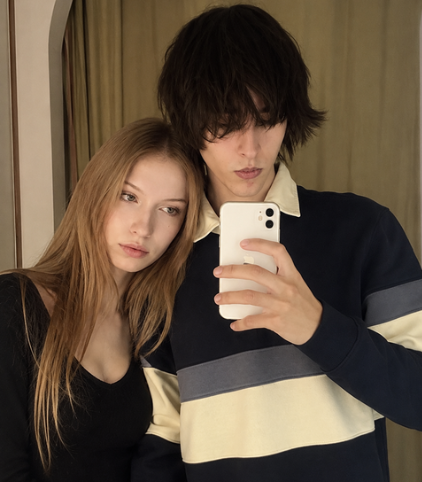
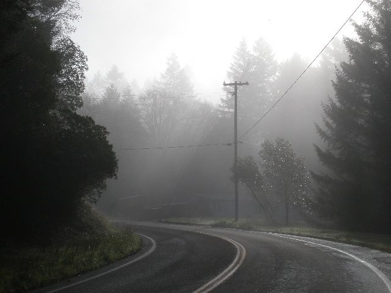
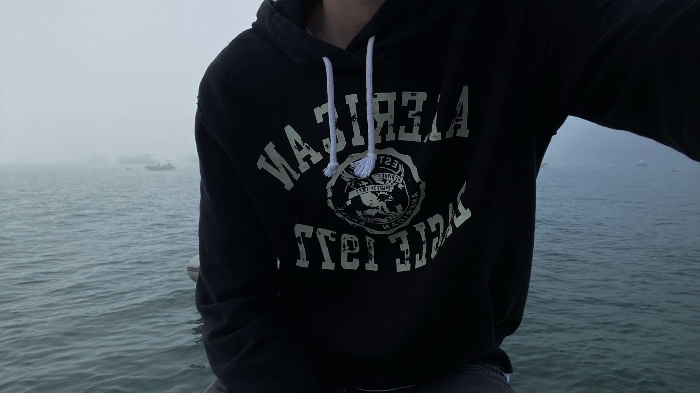

I'm someone who grows a lot through their own experience not just living things, but trying to understand what they mean. I get deeply involved with ideas, people and projects, and I don't like living on the surface: when something interests me, I think a lot, connect the dots and imagine possibilities bigger than the present.
Always under constructionI have a strong interest in technology, programming and building platforms not just as a hobby, but as actual world-building: social networks, digital experiences, projects that mix communication, identity and community. I like the idea of creating something people actually use, with real impact and a style of its own.
At the same time, I have an intense relationship with aesthetics, music and emotional mood. I pick songs thinking about the effect they cause, how a scene "feels", how I want to be perceived in certain moments. It's almost like thinking of life in scenes a sensitivity for image and personal narrative that runs through everything I do, including the way I build things.
In relationships, I've gone through pretty intense phases of connection, attachment and learning idealization, disappointment, and, little by little, more maturity. Today I have a calmer outlook on situations that used to affect me much more, which shows an important inner shift: I understood that people change, that stories aren't fixed, and that not everything defines me.
I also carry a constant search for identity and place. At times I don't quite feel "home" in certain spaces, as if I were between phases or different environments which fits someone who is still under construction, not settled in one spot, but still figuring out where and how they want to belong.
Deep down, what shows up the most in all of this is movement. I change, adjust, learn, revisit feelings and ideas. And even when it looks confusing or intense, it's all part of a continuous process of identity formation I'm still writing who I am, but already thinking big while I do it.
I have a strong ambition to create something relevant, not just consume what already exists. Ideas like social networks, digital platforms and creative projects show that I'm not satisfied with just being a user: I want to be someone who designs experiences something that connects technology, community and identity in a way I haven't quite seen out there.



My social links